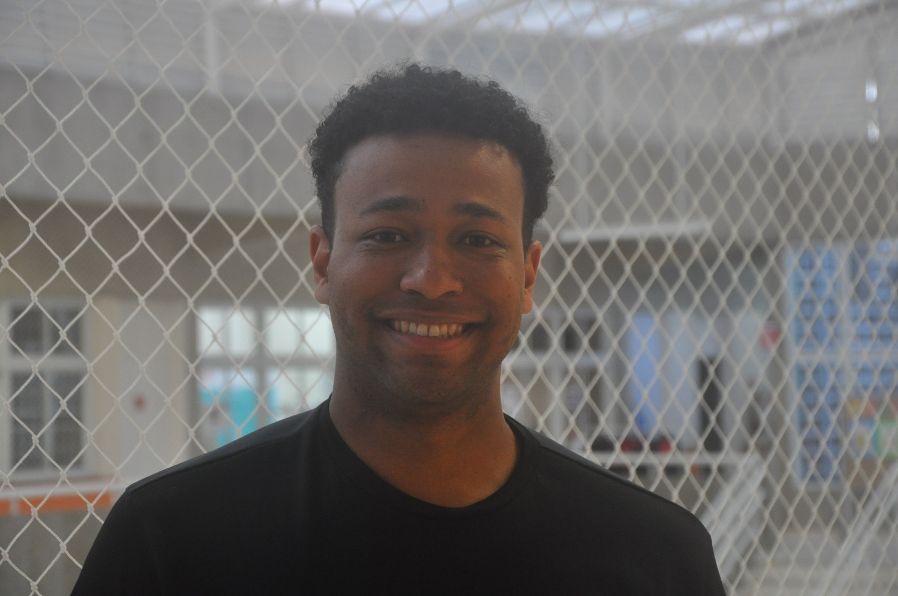
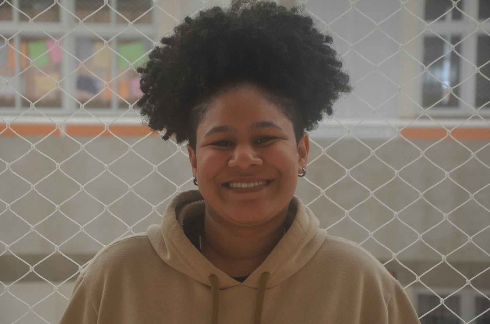

Inovação Tecnológica
Projetos focados em desenvolver soluções tecnológicas inovadoras que transformam a maneira como interagimos com o mundo digital. Nossos alunos criaram aplicativos, sistemas web e ferramentas que solucionam problemas reais do cotidiano, demonstrando criatividade e domínio técnico.